Hallar la expresión booleana minimizada:
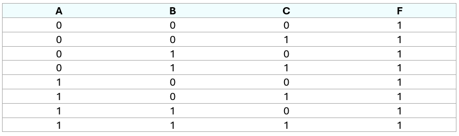
Tabla de verdad
❖ Solución
Paso 1. Hallar los Minitérminos:
F = a'b'c' + a'b'c + a'bc' + a'bc + ab'c' + ab'c + abc' + abc
Paso 2. Simplificar mediante las propiedades hasta llegar a la expresión mínima:
F = a'b'(c'+c) + a'bc' + a'bc + ab'c' + ab'c + ab(c' + c) (Factorización)
F = a'b' + a'bc' + a'bc + ab'(c' + c) + ab (Tautología: c'+c = 1)
F = a'b' + a'b + ab' + ab (Tautología: c'+c = 1)
Finalmente la expresión queda: 1 (Identidad: a'b' + a'b + ab' + ab = 1)
━━━━━━━━━━━━━━━━━━━ ◦ ❖ ◦ ━━━━━━━━━━━━━━━━━
Obtener la expresión mínima con el método de Karnaugh:
❖ f(a,b,c) = abc' + a'bc' + abc + ab'c
Para construir el diagrama de Karnaugh, se hace una tabla de verdad para visualizar de forma binaria los minitérminos de la fórmula booleana.
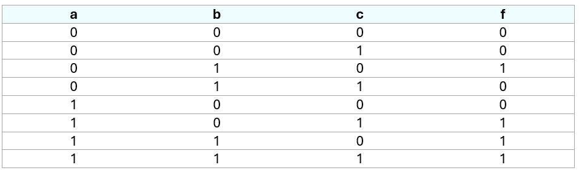
Ejercicio 5
Se construye el diagrama de Karnaugh para una función booleana de tres variables.
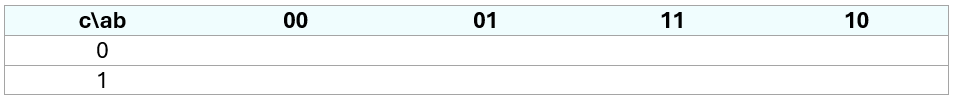
Diagrama de Karnaugh
Se colocan números uno en los recuadros donde los valores de las variables coinciden con los que están en la tabla de verdad, que, además, a su vez, tienen un número uno en la columna de salida. Las casillas vacías se rellenan con ceros.
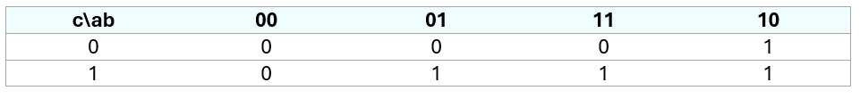
Diagrama lleno
Se marcan las adyacencias que se identifiquen.
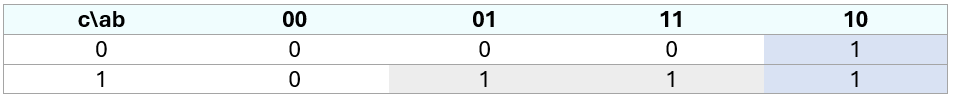
Adyacencias marcadas
Para transcribir las adyacencias a minitérminos, se verifica que los valores de las variables en el diagrama de Karnaugh se mantienen constantes. Por ejemplo, la adyacencia gris tiene a A como constante con 1, pero B no lo es, por lo que no se agrega. C sí lo es. Se hace el mismo análisis con la otra adyacencia para obtener la fórmula minimizada.
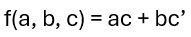
Fórmula minimizada
Los minitérminos obtenidos se conectan con sumas para obtener una función en una forma normal disyuntiva.
━━━━━━━━━━━━━━━━━━━ ◦ ❖ ◦ ━━━━━━━━━━━━━━━━━
Obtener la expresión mínima de la siguiente fórmula booleana:
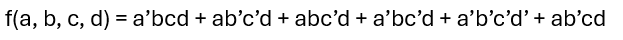
Fórmula 6
❖ Solución
Para construir el diagrama de Karnaugh, se hace una tabla de verdad para visualizar de forma binaria los minitérminos de la fórmula booleana.
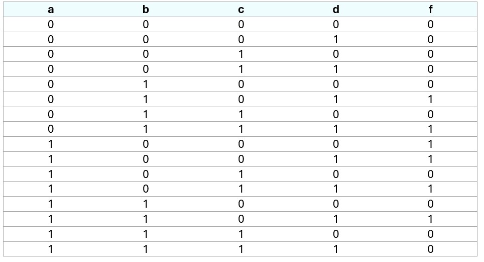
Tabla de verdad
Se construye el diagrama de Karnaugh para una función booleana de tres variables.
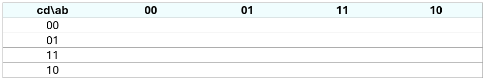
Diagrama de Karnaugh
Se colocan números uno en los recuadros donde los valores de las variables coinciden con los que están en la tabla de verdad, que, además, a su vez, tienen un número uno en la columna de salida. Las casillas vacías se rellenan con ceros.
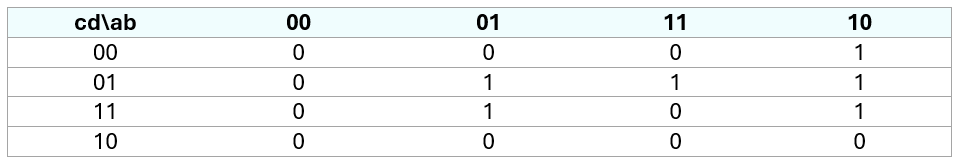
Diagrama lleno
Se marcan las adyacencias que se identifiquen.
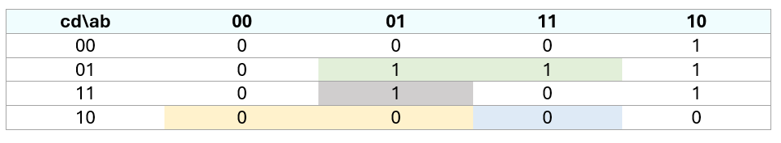
Adyacencias marcadas
Para transcribir las adyacencias a minitérminos, se verifica que los valores de las variables en el diagrama de Karnaugh se mantienen constantes. Por ejemplo, la adyacencia verde tiene a A, B y D constantes, pero no a C. Por lo tanto, la C se ignora, y las demás variables se incluyen en la forma minimizada.
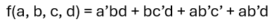
Fórmula minimizada
Los minitérminos obtenidos se conectan con sumas para obtener una función en una forma normal disyuntiva.
━━━━━━━━━━━━━━━━━━━ ◦ ❖ ◦ ━━━━━━━━━━━━━━━━━
Demuestra la siguiente equivalencia booleana:
❖ xyz + xz + z = z
xyz + xz + z = xyz + z (x+1) (Factorización)
= xyz + z (1) (Dominancia: x+1 = 1)
= xyz + z (Identidad: z(1)) = z)
= z (xy + 1) (Factorización)
= z (1) (Dominancia: xy+1 = 1)
= z
━━━━━━━━━━━━━━━━━━━ ◦ ❖ ◦ ━━━━━━━━━━━━━━━━━